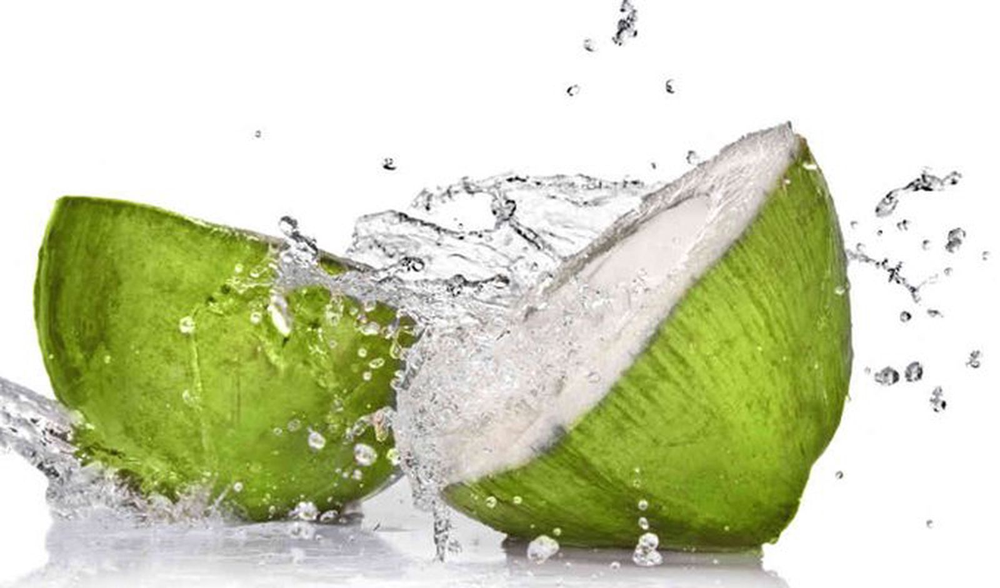

Nước dừa là loại nước uống được ưa chuộng vì vị ngọt thanh cùng mùi hương đặt trưng của dừa.Ngoài ra ,nó còn được mọi người người ưa thích vì mang lại nhiều lợi ích cho sức khẻo . Vậy nước dừa có tác dụng gì?
Nước dừa là nguồn cung cấp một số chất dinh dưỡng . Uống nước dừa có tác dụng làm giảm nguy cơ mắc bệnh tim mạch,cải thiện bệnh tiểu đường ,ngăn ngừa nguy cơ mắc bệnh sỏi thận..vì trong nước dừa chứ một số thành phần hỗ trợ cho cơ thể trong qua trình hấp thụ
1.Nước dừa có tính chống oxy hóa
Các nghiên cứu trên động vật cho thấy nước dừa có tác dụng làm thay đổi cấu trúc của các gốc tự do, khiến chúng không còn khả năng gây hại cho cơ thể. Theo kết quả của các nghiên cứu trên loài chuột cho thấy nước dừa có lợi ích cải thiện đáng kể về sự mất cân bằng oxy hóa, giảm hoạt động các gốc tự do, kết hợp với giảm huyết áp, nồng độ triglyceride và insulin.
2. Tác dụng nước dừa :
a)Nước dừa là nguồn cung cấp một số chất dinh dưỡng
Thành phần của nước dừa có chứa 94% nước và rất ít chất béo. Cần từ 6 - 7 tháng để một trái dừa non chuyển sang dừa chín. Khi dừa chín, phần lớn nước dừa chuyển từ dạng lỏng thành thịt trắng được gọi là thịt dừa.
b)Nước dừa giúp hỗ trợ sức khỏe tim mạch
Uống nước dừa có tác dụng làm giảm nguy cơ mắc bệnh tim mạch. Theo các nghiên cứu, nó có giúp làm giảm cholesterol, chất béo trung tính, đặc biệt là lượng chất béo ở gan. Từ nghiên cứu trên loài chuột, các nhà khoa học ước tính ở người nặng 68kg cần uống nước dừa mỗi ngày 2,7 lít để làm giảm cholesterol hiệu quả tương đương với tác dụng của thuốc statin. Tác dụng này là rất ấn tượng và cần được nghiên cứu thêm.
c)Nước dừa giúp cải thiện bệnh tiểu đường
Một số nghiên cứu trên động vật đã chỉ ra rằng nước dừa có tác dụng làm giảm lượng đường trong máu, giảm nồng độ hemoglobin A1c và giảm các dấu hiệu của mất cân bằng oxy hóa. Hiện vẫn chưa có nghiên cứu nào được thực hiện ở người. Với 3 gam chất xơ và 6 gam carb dễ tiêu hóa trên mỗi cốc (240ml), nước dừa phù hợp với kế hoạch ăn uống cho người mắc bệnh tiểu đường. Ngoài ra, nước dừa còn chứa hàm lượng lớn magiê, nó có thể làm tăng độ nhạy insulin và giảm lượng đường trong máu ở những người mắc bệnh tiểu đường tuýp 2 và tiền tiểu đường
Nước dừa giúp ngăn ngừa sỏi thận
Cung cấp đủ chất lỏng, trong đó có nước dừa giúp làm giảm nguy cơ mắc bệnh sỏi thận. Điều này được giải thích là do nước dừa có tác dụng ngăn chặn các tinh thể kết dính gây sỏi tại thận và các bộ phận khác ở đường tiết niệu. Các tinh thể chủ yếu được hình thành từ canxi, oxalate và các hợp chất khác. Các nghiên cứu đã chỉ ra nước dừa có tác dụng làm giảm sản xuất gốc tự do xảy ra để đáp ứng với nồng độ oxalate cao trong nước tiểu. Tuy nhiên, vẫn cần nhiều nghiên cứu hơn nữa để chứng minh hiệu quả của nước dừa trong ngăn ngừa bệnh sỏi thận.